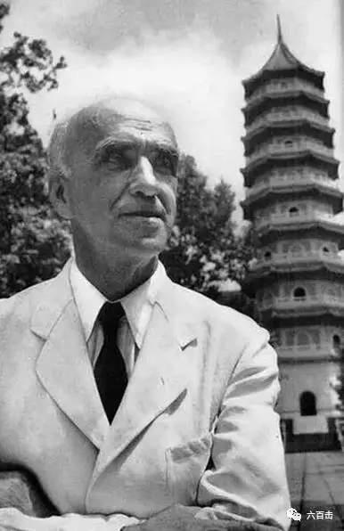
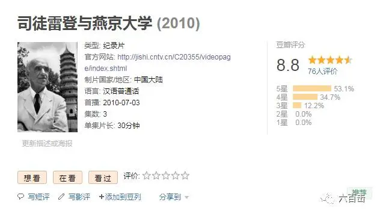
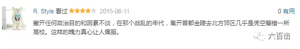
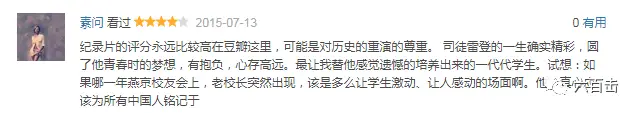
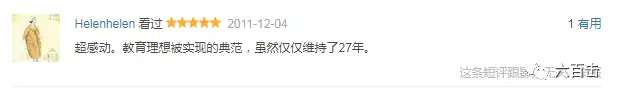

现在司徒雷登出任美驻华大使，司徒雷登是中国人民的朋友，是教育家，他生长在中国，受的美国教育。他住在中国的时间比住在美国的时间长，他就如一个中国的留学生一样，从前在北平时，也常见面。他是一位和蔼可亲的学者，是真正知道中国人民的要求的，这不是说司徒雷登有三头六臂，能替中国人民解决一切，而是说美国人民的舆论抬头，美国才有这转变。
——闻一多在《最后一次演讲》被删段落
1962年的今天，司徒雷登去世了。他是谁？一个美国人？一个宣教士？北京大学创立者？不对，我记得小时候好像看过一篇文章叫做《别了 司徒雷登》，但是我想不起具体内容了，只有一个印象，他应给不是一个好人，凭着小时候的模糊记忆隐隐约约能感觉出，他应给是打着宣教旗号进行文化侵略的帝国主义分子。
这是我学了十多年历史和语文教育的“成果”，当我上了大学，无意中看到了他的纪录片，我羞愧了，我为自己不去探索、不去了解真相就大言不惭而羞愧，我为北京大学没有安葬他的骨灰而羞愧，我为我们历史对于真相的随意抹杀和曲解而羞愧。
司徒雷登在燕大

所以今天向大家推荐这部真挚的纪录片《司徒雷登与燕京大学》，我们应该给自己一个了解真相的机会。
豆瓣评分8.8

看一下网友的评价



我觉得没有办法也没有必要去用文字详细介绍这部纪录片，不如直接观看。我只是提醒大家，我们不应该记住那个自己从来都没有去了解过，只是被别人灌输的“司徒雷登”，我们不应该记住过去因为意识形态而被污名化的“司徒雷登”。我们应该去认识司徒雷登，去反思为什么他能够培养出53名院士？为什么他能够培养出充满正义的师生？为什么今天的北大和昨日的燕大差距这么大？为什么中国容不下他，他又那么牵挂中国？是什么样的信仰能够支撑他如此的付出？
那么，请观看
第一集 北上
第二集 燕园
第三集 守望
相关阅读：
走近大师 | 深紫色叙事思想家——基耶斯洛夫斯基
一个唯科学主义者的悲剧
当孩子还是孩子时
没有过去的男人
这里没有挑逗你眼目情欲的小鲜肉，也没有挑动你肉体情欲的段子
更没有膨胀你今生骄傲的鸡血。
我们只在乎那些最质朴真诚的作品，在那里我们才能恢复真正的想象力
我们也坚信这才是我们真正需要的。